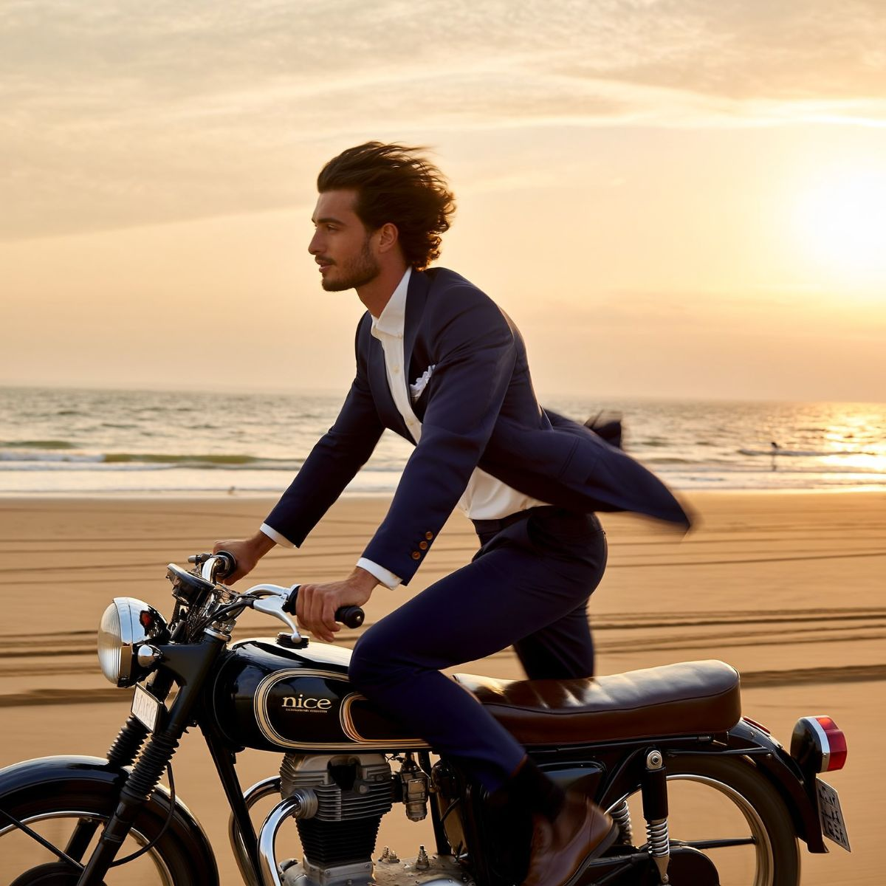
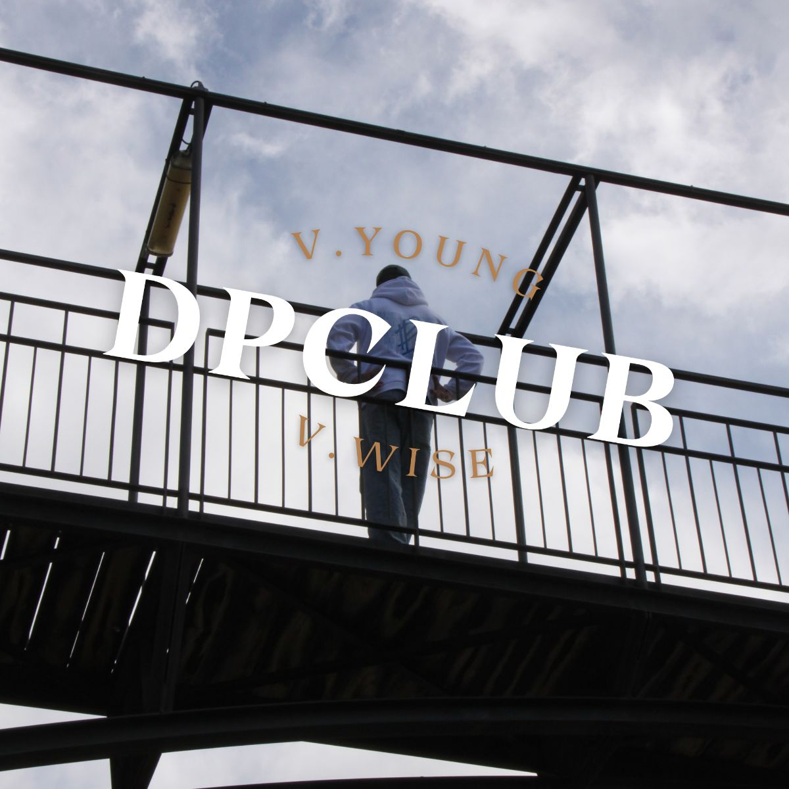

Treball
Identitats, marques de roba, cartells i contingut per a xarxes. Tria una carpeta o entra directament a cada projecte.


Identitat visual
Can Colls Disseny(1)
La meva pròpia marca: un estudi de branding unipersonal per a petits negocis que volen semblar consolidats sense perdre el que els fa diferents. El símbol combina el nom en corba, un patró d'ones i un nedador reclinat, un homenatge al cartell de viatges de mitjan segle.
Inclou logotip i espai de seguretat, usos incorrectes, paleta, sistema tipogràfic amb Montserrat, direcció d'art i aplicacions: samarreta, bossa de viatge i tanques publicitàries.

Brand Guidelines · Can Colls Disseny
Branding de moda
Nice(2)
Una marca de roba de vestir creada des de zero. Vaig liderar totes les fases: conceptualització, identitat visual, manual de marca i mockups, fins a la supervisió de la producció final.
Una "n" en serif com a monograma, paleta navy i crema, bossa, etiquetes i una campanya fotogràfica on el vestit és el protagonista: cotxe clàssic, platja, bosc.

Campanya Nice · The confidence of a suit
Marca i comunitat
DParadise Club(3)
Dues marques de roba, DParadise i Fox Rides, que vaig crear juntament amb un soci. Entre els dos vam portar tota la cadena de valor: selecció de proveïdors, branding i posicionament a xarxes socials.
Campanyes com "The Spring Dream" i "D.ParadiseClub is open", cartells amb codi QR i un feed pensat per construir comunitat. Una experiència clau per entendre els reptes del mercat real.

DPClub · NGL I was mad
Cartelleria
Sèrie personal
Música, cinema i cotxes que m'han marcat. Tipografia gran, fotografia i la composició del cartell clàssic. Fets amb Affinity.
Contingut per a xarxes
@collsblanco
Fa temps que creo contingut per a xarxes socials al meu Instagram, @collsblanco: carrusels sobre branding, tipografia i eines d'IA per a creatius, dissenyats de la primera a l'última diapositiva.
En preparació
Projectes en què estic treballant ara mateix.
- PròximamentNewsletter
Una carta periòdica sobre branding, disseny i les eines que faig servir.
- PròximamentWebs per a empreses
Pàgines web per a empreses i professionals, amb la mateixa cura que una identitat.
- PròximamentXarxes per a empreses
Gestió i contingut de xarxes socials per a empreses i professionals.